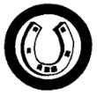

Horsemanship
- Name fifteen (15) parts of a horse.
- Name four (4) leading breeds of horses. Explain what each breed is noted for.
- Show the care of saddle and bridle. Name the main parts of the saddle and bridle.
- Show how to groom, pick out feet, and care for a horse after riding.
- Describe the symptoms of colic. Describe four (4) other horse diseases.
- Name three (3) main defects of feet and legs. Explain how to detect them.
- Show how to safely approach and rescue a horse from a stall in case of fire.
- Ride a horse for a distance of ten (10) kilometers.
|